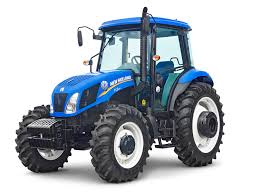

<!DOCTYPE html>
<html lang="en">
<head>
    <meta charset="UTF-8">
    <meta http-equiv="X-UA-Compatible" content="IE=edge">
    <meta name="viewport" content="width=device-width, initial-scale=1.0">
    <title>Agro auto peças</title>
    <link rel="stylesheet" href="style.css">
</head>
<body>
    
</body>
</html>
<section class="nome do produto">
<h2 class="titulo principal"></h2>
 
<ul class="cabecalho-lista">
<li class="cabecalho-lista-item">Compra de peças agricolas</li>
<li class="cabeçalho-lista-item">Diretamente da loja</li>

</ul>

<h2 class="trator-titulo">Descrição do produto</h2>
<p class="trator-texto-1">Transmissão (12 x 12, super-redutor 20 x 12), reversor e bloqueio do diferencial eletro-hidráulicos, embreagem multidiscos,tanque de combustível auxiliar (53L), sistema para piloto automático elétrico, cabina.</p>
    <p class="trator-texto-2">Ano 2021 - R$ 218.875,00,</p>


    
    <h2 class="turbina-titulo">descrição do produto</h2>
    <p class="turbina-texto-1">Ganho médio de potência de 10 a 15 cv’s
        É recomendado a regulagem da bomba injetora para melhor resultado
        Não é necessário alterações internas no motor
        Não é aplicável para modelos de tratores compactos ou cafeeiros
        Turbo utilizado modelo APL240 de alta performance para desempenho agrícola
        Caracol frio .42
        Caracol quente  .36
        Rotor Turbina 49.5/64mm
        Rotor compressor 42.5/60mm
        Base T3
        É recomendado que a instalação do produto seja feita por um profissional especializado
        </p>
        <p class="turbina-texto-2">Apartir de R$4.659,31</p>


</section>
